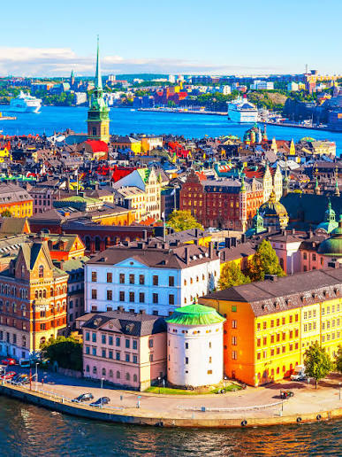

🌲 Природа
Тысячи озёр, густые леса, острова и горные маршруты в северной части страны.
Скандинавия • природа • дизайн
Здесь шумят сосновые леса, сияет северное небо, а в городах царят уют, инновации и высокое качество жизни.
Узнать большеО стране
Швеция — одна из самых красивых и прогрессивных стран Европы. Её любят за чистые города, просторные леса, прозрачные воды и особую атмосферу уюта. Здесь каждая поездка сочетает природу, историю и современный образ жизни.
В Швеции легко почувствовать баланс между активным отдыхом и спокойствием. Можно провести день в музее, а вечером — на прогулке по набережной у моря.
Галерея

Стокгольм
Особенности
Тысячи озёр, густые леса, острова и горные маршруты в северной части страны.

Стокгольм, Гётеборг и Мальмё — яркие примеры современного шведского дизайна и жизни.

Музеи, литература, фьорды, зима с северным сиянием и лето с белыми ночами.
Города
Красивая столица на островах с крепостями, набережными и современным искусством.
Портовый город с уютными районами, кафе и живой атмосферой у воды.
Северная часть страны, где зимой можно увидеть северное сияние и покататься на собачьих упряжках.